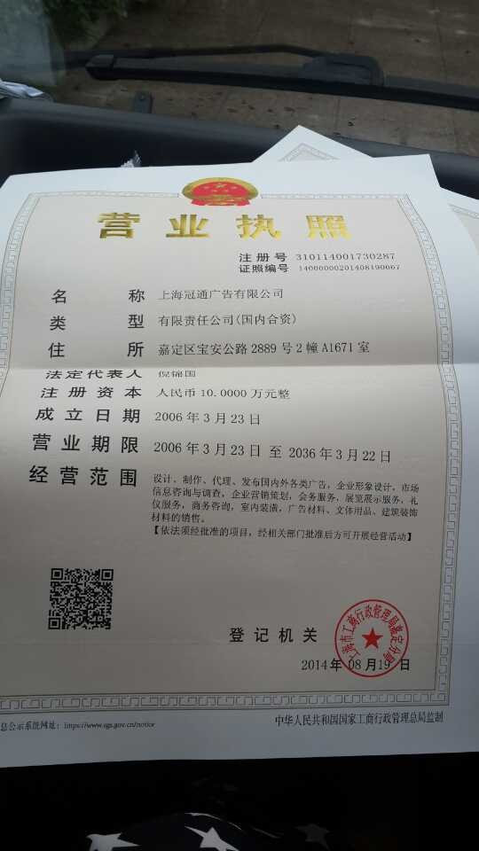

Conversation with 81184027 at Tue 19 Aug 2014 03:52:57 PM CST on 154115835 (webqq)
(03:56:02 PM) 小绵羊: 同盟会有点本事哦!连工作安排都搞到了，有了罪证，关键是怎么样去阻止人们不用花心机去挖空心思去读，背，理解，执行这工作安排!
(04:08:12 PM) 光: 但是
(04:08:19 PM) 光: 这个不是重点啊
(04:08:36 PM) 光: 真正的安排他们不会这样通知的
(04:08:45 PM) 光: 比如世界末日游行
(04:08:50 PM) 光: 都是没有征兆的
(04:12:40 PM) 心理师仲老师: 中国式离婚，一离，容易成敌人，就算不成敌人，也容易失去感情，连基本尊重都没法保持。就此，我赞同孙隆基的说法：婚姻中，你是我的一部分，我们共享一个自我；离婚了，你就成了剥离出了我的自我，而一旦我又成家有了新共享自我，就更要与你彻底脱离。
(04:12:58 PM) Loki : 
(04:19:56 PM) 此去经年: http://wenku.baidu.com/link?url=UTd4nA2uvNGe-16EgErFSV0rLDfpWSXTBxNJPzeqnFHGwfRwZCstmpXNcRRSUJIkuLJgUB0vLrdvLh-FRzAGGehdnsedf2jcc6wQr-a9HWC
(04:20:02 PM) 此去经年:
(04:21:09 PM) 紫罗兰: :D是我摘的
(04:21:36 PM) 上善若水: 这是什么
(04:21:55 PM) 紫罗兰: 粘子
(04:24:41 PM) 上善若水: 没听过呢
(04:24:46 PM) 此去经年: 排名第一的，客家话叫：柠哩□
这东西不能吃太多，吃多了拉不出来就惨。□
我们家乡的顺口溜：□
七月七，柠哩乌一滴；□
八月半，柠哩乌一半。□□□
九月九，柠哩好蒸酒。□
(04:25:09 PM) 紫罗兰: :p
(04:25:24 PM) 福建-福州&水浒: 好吃么
(04:25:26 PM) 紫罗兰: 吃没有完全熟透的才会拉不出来
(04:26:11 PM) 此去经年: 普通话——稔
(04:26:35 PM) 紫罗兰: 好
(04:26:39 PM) 紫罗兰: 稔子
(04:26:39 PM) 此去经年: 稔子
(04:26:45 PM) 此去经年: 野果
(04:26:46 PM) 紫罗兰: 当然好吃
(04:26:51 PM) 紫罗兰: 是的
(04:27:05 PM) 小绵羊: 我看不到图片，我也知道，那是山上坟边出产的野生果，大概也是这段时间成熟，黑透饱满的才甜好吃，就象女人，肌肤红润饱满的才有出品味，回味无穷!题外话!
(04:27:15 PM) 上善若水: 好吃为嘛不出名？
(04:27:39 PM) 上善若水: 你这孩子真会联想！
(04:27:53 PM) 福建-福州&水浒: :D
(04:28:24 PM) 紫罗兰: @小绵羊 你什么都东西都能和女人拉上关系
(04:28:46 PM) 福建-福州&水浒: :$
(04:28:49 PM) 小绵羊: 饱满圆润黑透有光泽的好吃
(04:29:23 PM) 小绵羊: 我是男的嘛，
(04:29:37 PM) 福建-福州&水浒: 结婚了吗
(04:29:46 PM) 紫罗兰: 好吃啊，我这里的小孩都可以吃到饱
(04:29:56 PM) 福建-福州&水浒: :g
(04:30:03 PM) 紫罗兰: :D
(04:30:07 PM) 小绵羊: 我爱女人!漂亮女人!
(04:30:11 PM) 福建-福州&水浒: 好想试试
(04:30:28 PM) 紫罗兰: 来吧，我请你
(04:30:31 PM) 福建-福州&水浒: 漂亮女人开销大
(04:30:36 PM) 上善若水: 你想试谁？
(04:30:42 PM) 此去经年: 植物名词，桃金娘
(04:30:53 PM) 紫罗兰: 我这里还有板栗
(04:30:59 PM) 福建-福州&水浒: 试吃啊
(04:31:00 PM) 此去经年: 在联想一下
(04:31:11 PM) 福建-福州&水浒: 又不是女人:L
(04:31:19 PM) 紫罗兰: 没有听说过桃金娘这个，只知道叫稔子
(04:31:36 PM) 上善若水: 阿紫哪里的？
(04:31:45 PM) 福建-福州&水浒: 我最喜欢吃板栗了
(04:32:02 PM) 紫罗兰: 谁是阿紫
(04:32:09 PM) 福建-福州&水浒: :D
(04:32:17 PM) 福建-福州&水浒: 乱套了
(04:32:46 PM) 小绵羊: 身材棒，肌肤好，思想高尚的才是好的漂亮的女人，衣服漂亮不叫漂亮!
(04:33:11 PM) 此去经年: 产台湾、福建、广东、广西、云南、贵州、重庆南部及湖南最南部。分布于中南半岛、菲律宾、日本、印度、斯里兰卡、马来西亚及印度尼西亚等地。
(04:33:48 PM) 紫罗兰: 俺是罗兰，不要叫我做阿紫
(04:33:52 PM) 小绵羊: 挑金娘?
(04:33:57 PM) 紫罗兰: 我是广西的
(04:34:10 PM) 紫罗兰: 桃金娘
(04:34:25 PM) 小绵羊: 那是爱称!
(04:34:37 PM) 紫罗兰: :D
(04:34:46 PM) 上善若水: 这几天又当爹又当妈呀
(04:35:25 PM) 紫罗兰: 哈哈，荣幸
(04:35:39 PM) 小绵羊: 阿兰，也是爱称!爱人的称呼!
(04:35:54 PM) 紫罗兰: --b
(04:36:03 PM) 紫罗兰: 阿兰是小姐
(04:36:08 PM) 福建-福州&水浒: 哈哈，阿紫
(04:36:30 PM) 上善若水: 阿紫，天龙八部里面那个
(04:36:35 PM) 紫罗兰: 我姓罗名兰，我喜欢紫色。故曰 紫罗兰
(04:36:40 PM) 福建-福州&水浒: 这是演《天龙八部》吗
(04:37:01 PM) 福建-福州&水浒: 罗大姐你好